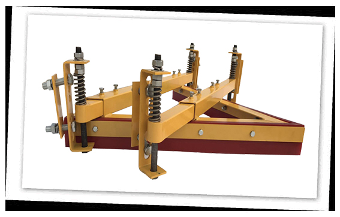

SYBC-V型聚氨酯空段清扫器， 适用于尾部滚筒前方以及拉紧位置前方的非工作面输送带上。有效的减小了皮带经过滚筒时残留物料对皮带的磨损。
SYBC-V型清扫器的主要特点：
1）该空段清扫器为本公司专利产品，具有使用寿命长，清扫效果好等优点。
2）该空段聚氨酯清扫器清扫器刀片由特种改性聚氨酯特制而成，具有阻燃抗静电性、高耐磨性、高弹性、耐酸碱性、摩擦系数低等特点，不会对输送带造成伤害，使用寿命长。
3）该清扫器独特的犁式清扫结构，更易铲除输送带表面的残留物。
4）该空段清扫器刀片磨损之后不需人工调节，根据清扫器自重，可自动调节刀片补偿。
5）该空段聚氨酯清扫器定制支架长度，根据输送机机架设计宽度，安装更方便，运行更稳定。
6）该空段清扫器可选本公司弹簧涨紧器，可使清扫器更好的贴合输送带，清扫效果更稳定高效
